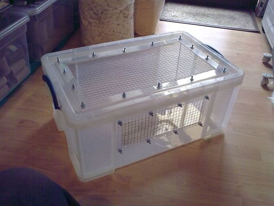

Bin cages are homemade habitats made from storage bins and wire mesh, which is sometimes called hardware cloth in home improvement stores. Bin cages tend to be very creative and flexible, allowing a creative owner to do almost anything they want with them!
Pros
- Cheap: Of all the options, bin cages are the one that requires the least amount of money. You can buy a lot of space for relatively little cash.
- Customizable: Due to its homemade nature, a bin cage can look anyway you want and incorporate features that a store bought option may not allow you.
- Stackable: Many storage bins are created to be stackable, making it easy to create multiple levels or use space wisely in a smaller room.
Cons
- Unlike a store bought option, you must make a bin cage yourself. If you lack the tools or knowledge, this may put the option out of reach for you. Ask a parent or other trusted adult to help you make a bin cage.
- A bin cage carries a larger escape risk than, for example, a glass tank. Most storage bins are made from thin plastic which, if a gerbil can get its teet around it, will be chewed up. Be sure to choose either a sturdy bin or a bin where they cannot get any part of the bin into their teeth at all.
- Possibly dangerous: since a bin cage is usually made of plastic, if a gerbil gets some of that plastic into their mouth, they may swallow some which is very harmful to them. The bin cage also needs to have ample air flow and to keep any potential sharp edges left behind from cutting out of a gerbil's reach. If you have any younger siblings, the chance they may accidentally hurt themselves on the cage is higher as well.
- Once the storage bin is used as a bin cage, it can't be used for anything else.
Conclusion
For handy people on a budget, a bin cage can be a perfect solution for an aspiring gerbil owner. However, lots of care needs to be taken in order to create one that is both secure and safe for both human and gerbil alike.